AIX Agent Installation
1. Prerequisite Check
Agent 설치를 원하는 Client에 java 1.6 버전이 설치되어 있는지 확인합니다.
# java -version
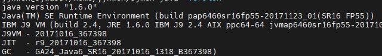
Client Agent 구동시 해당 버전이 필요하므로 사전에 설치를 해줍니다. File set만 설치되어 있으면 되며 경로 설정 등은 변경하지 않아도 됩니다.
2. Auto Installation Program Upload & Installing the Agent Program
- sjmon 신규 계정을 생성할 수 있는 경우
# mkuser -a gecos="SJMON Agent" id=9999 groups=staff pgrp=staff home='/opt/sjmon' sjmon
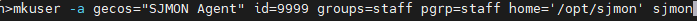
계정 생성이 완료되면 Auto Installer 또는 manual Installation 절차에 따라 설치를 진행합니다.
- 기존에 사용중인 계정을 활용하는 경우
기존에 사용중인 계정을 활용하는 경우 staff group 권한 이상이면 됩니다. 사용하려는 계정으로 전환한 뒤 해당 user의 home directory 아래 sjmon 디렉터리를 만들고 Auto Installer 또는 manual Installation 절차에 따라 설치를 진행합니다.
2.1) Agent Installation by Auto Installer
sjmon ($ su – sjmon) 계정으로 전환한 뒤 아래 install과 관련된 파일들을 /opt/sjmon 안에 upload한 뒤 sjmonInstall.sh 파일을 실행하면 Manager로부터 설치파일을 내려 받아 자동으로 설치를 완료합니다.
- 파일 위치 : manager 의
/home/sjmonv2user/sjmon_file/installer/(installer버전)
필요 파일명 : install_log4j.xml / sjmon_install.jar / sjmonInstall.sh
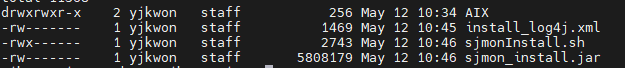
- sjmonInstall.sh 파일 실행시 sftp 또는 ftp를 사용, manager ip, 그리고 기본적으로는 43001 port를 사용해서 설치합니다.
(포트는 manager설치 시 변경을 했다면 변경된 Port를 사용합니다)
#./sjmonInstall.sh sftp XXX.XXX.XXX.XXX 43001 sjmonv2user zaq12wsx 0
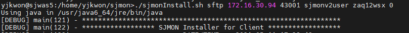
2.2) Agent Installation by Manual Procedure
고객사 사정으로 Manager서버에 ftp나 sftp접속이 어려운 경우, Manager서버에 있는 Installation 파일을 직접 다운받아 Agent에 SJMON을 위해 생성한 디렉터리에 SJMON 수집용 계정을 통해 업로드한 뒤 설치를 진행합니다.
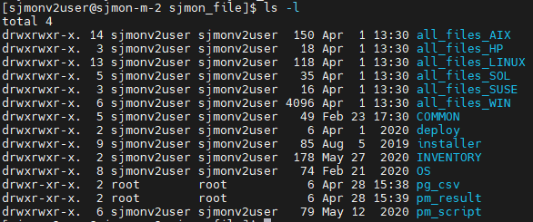
Manager서버에 sjmonv2user로 접속한 뒤, AIX의 경우 all_files_AIX 디렉터리안으로 이동하여 해당하는 버전(TL까지 Check)의 설치 파일들을 client의 Agent 디렉터리로 다운받습니다 (ex. /opt/sjmon).
AIX 버전 정보 확인 명령어 : lslpp -l | grep bos.mp | awk '{print $2}
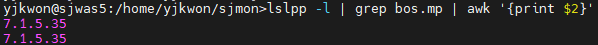
다운이 완료되면 아래 5개 파일을 확인 및 수정한 뒤 Agent를 구동합니다.
- agent.properties
| 설정 항목 | 설명 |
|---|---|
| agent.host | SJMON manager서버의 IP |
| agent.hport | SJMON manager와 연결되는 Port (default 43001) |
| agent.home | Agent가 설치된 경로 (ex. /opt/sjmon) |
| agent.pipelocation | Agent의 pipe위치 (ex. /opt/sjmon/sjmonpipe) |
| Agent.configlocation | Agent의 agent.properties(ex. /opt/sjmon/agent.properties) |
- startAgent.sh, startObserver.sh, stopAgent.sh, stopObserver.sh
| 설정 항목 | 설명 |
|---|---|
| JAVA | Agent의 Java가 설치된 위치 (ex. /usr/java6_64/jre/bin/java) |
| AGENT_HOME | Agent가 설치된 위치 (ex. /opt/sjmon) |
- Agent Start
Agent의 SJMON 계정을 통해 파일이 업로드 된 위치에서 Agent를 구동합니다.
# ./startObserver.sh
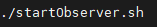
3. Agent program check
설치가 완료되면 sjmon process의 동작 여부를 확인합니다.
ex) ps -ef | grep sjmon
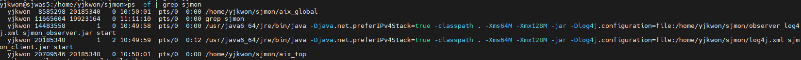
aix_global, aix_top, 그리고 java process 두 개가 실행된 상태가 정상 상태입니다.
4. crontab 등록
client 로그를 주기적으로 지우기 위해 crontab에 아래 내용을 등록합니다.
- Agent를 구동한 계정의 crontab 파일 수정
# crontab -e
00,10,20,30,40,50 * * * * cat /dev/null > /opt/sjmon/nohup.out
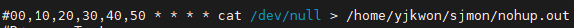
- root권한으로 변경한 뒤 parameter 수집과 관련된 내용을 crontab파일에 등록
# crontab -e
### SJMon - Gathering Parameter ###
10 0 * * * cd /opt/sjmon && ./aix_param > /dev/null 2>&1
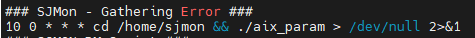
5. Agent Program Start & Stop
- Agent Program Start
sjmon Agent를 구동한 계정에서 startObserver.sh 실행합니다
# ./startObserver.sh
- Agent Program Stop
sjmon Agent를 구동한 계정에서 stopAgent.sh 실행합니다
# ./stopAgent.sh
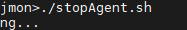
6. PM Script 등록 및 수행
Sjmon manager 설치 시 제공되는 “sjmon_pmscript_v1.sh” 파일을 사용하거나 고객 환경에 맞게 수정하여 사용 가능합니다.
- 파일 위치 : manager의
/home/sjmonv2user/sjmon_file/pm_script/AIX/
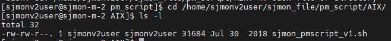
6.1) PM Script 파일 저장 및 수정
sjmon_pmscript_v1.sh 파일을 Agent의 원하는 디렉터리로 이동합니다.
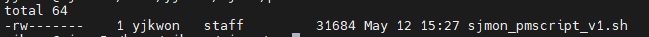
파일을 열어 DIR이 적혀 있는 라인을 찾아서 sjmon agent가 설치된 디렉터리 이름과 pm_script 디렉터리 이름을 입력합니다.
Ex) DIR=/opt/sjmon/pm_script
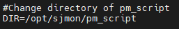
- SJMON PM Script Frame 사용
Description, start, command, stop의 형식으로 원하는 내용의 PM을 수행
| 항목 | 설명 |
|---|---|
| Description | PM을 수행할 정보를 입력(ex. CPU Information) |
| Start | 위에서 입력한 정보의 PM을 시작 |
| Command | Description에 입력한 정보를 수집할 실제 command입력 |
| Stop | 위에서 입력한 정보의 PM 종료 |
Example)
Print “description, CPU Information”
### start ###
Print “command, lsdev –Cc processor”
lsdev –Cc processor
### end ###
Print “description, Memory Information”
### start ###
Print “command, lsattr –El mem0”
Lsattr –El mem0
### end ###
반복적으로 원하는 PM정보를 수행
6.2) PM Script 수행 주기 설정
root권한으로 Crontab에 PM Script를 원하는 주기로 등록합니다.
Ex) 매일 20시에 수행되도록 설정
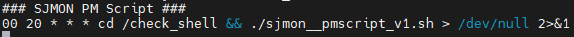
SJMON Agent가 설치된 디렉터리에서 agent.properties파일을 sjmon 계정으로 열어서 PM 결과 파일이 SJMON Manager서버로 전송되는 주기를 설정합니다.
Ex) 매일 22시에 SJMON Manager서버로 전송
agent.sched.job.pm = 0 0 22 * * ? (초 분 시 일 월 요일)
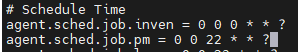